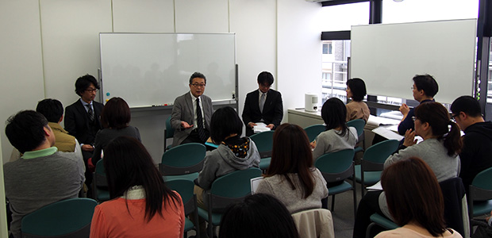
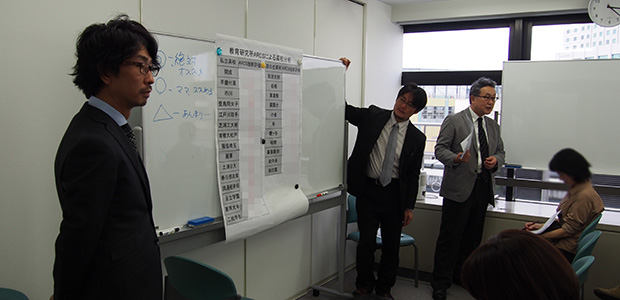
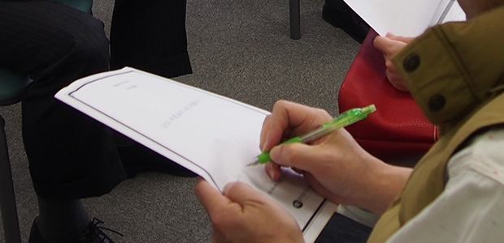

今年二月から新たに始まった月イチお話会も、今月で三回目。今回は受験特集のラストを飾る総集編です。第一回は私立高校特集、第二回は公立高校特集と、それぞれ詳しく見てきました。最終回の今回は、これまでの話をまとめるとともに、二つの大きな目玉が登場。 それは 「ARCSおすすめ併願パターン一覧」 と 「独断と偏見で選ぶ”おすすめ”高校一覧」 です。 大学に比べれば数が少ないとはいえ、高校もたくさんあります。特にこの東葛地域は都内にも茨城にも埼玉にも比較的容易にアクセスできることもあって、選択肢が他の地域よりも豊富な場所です。しかし、選択肢が多いが故に、悩みも多くなりますね。試験形式の違いや難易度の違い、さらに、偏差値には現れてこない本当の難易度。これらの要素を組み合わせて最適な入試プランを作るのは、簡単なようでいてなかなか骨の折れる作業です。そこで、ARCSがこれまでの経験と取材の結果を生かして、いくつかのモデルケースを紹介することにしたのです。「塾」の内部の人間としてはなかなかいえないディープなネタも織り交ぜつつの進行でしたが、これがまた新鮮で、話している私たちも楽しむことができました。
今回はかなり具体性の高い内容ということもあり、出席してくださったお客様がみな、細かい部分までメモを取ってくださっていたのが印象的でした。お子様の志望校選択の一助となれば幸いです。
受験特集は今回で一段落。次回からはご家庭での子供の教育についてのシリーズが始まります。是非お楽しみに！